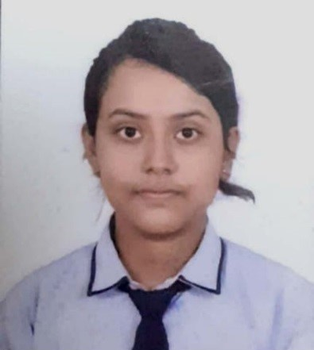

Kolkata, India
Email: srijab249@gmail.com
Phone: + 91-7003959394
GitHub: github.com/Srija2006-star
LinkedIn: linkedin.com/in/srija-banerjee
Computer Science student at RCC Institute of Information Technology with a strong understanding of core software engineering concepts and hands-on knowledge of C, Python, and Data Structures & Algorithms.
Aspiring to work as a software developer by applying academic learning to practical problem-solving and real-world software development.
Motivated to gain industry experience, strengthen technical skills, and contribute to building efficient, reliable, and scalable software solutions.
| Name of Examination | Name of Institution | Board/Council/University | Discipline | Percentage/cgpa | Year of Passing | Rank |
|---|---|---|---|---|---|---|
| B.Tech | RCC Institute of Information Technology | MAKAUT | Computer Science Engineering | 9.81(till 3rd Semester) | Pursuing | - |
| AISSCE | South Point High School | CBSE | Science | 88.6% | 2024 | - |
| AISSE | South Point High School | CBSE | - | 93.6% | 2022 | - |
Programming Languages: C, Python, Java
Web Development: HTML, CSS, Basic Javascript
Data Structures & Algorithms: Arrays, Linked Lists, Stacks, Queues, Trees, Searching & Sorting Techniques
Strong analytical and problem-solving skills
Quick learner with a growth mindset
NPTEL— Python Programming
NASSCOM— Web Development
Smart India Hackathon (SIH) – Participant , analyzed problem statements and contributed to designing software-based solutions